蜘蛛侠手搓RNAi设备，分析个蜘蛛单细胞数据看看miRNA调控效果+scTenifoldKnk虚拟敲除一致性评价
原文：https://mp.weixin.qq.com/s?__biz=MzAwMzIzOTk5OQ==&mid=2247540932&idx=1&sn=3bd0f90afa68e1f1f8ff93bb5a46db72&chksm=9b3c5994ac4bd082b660efb1a1bde0d0e09c586968bdf59186a4a5a91e894020658567636a86#rd 合集：单细胞教程全收录
一、写在前面
大家都看了蜘蛛侠崭新之日了吗？影片中蜘蛛侠和班纳博士交流后手搓复刻(大概率也有名为EV的专属AI介入)了班纳手中抑制浩克基因的一个RNAi抑制器。Biomamba显然是没有这种发明创造能力了，不过找一个蜘蛛的RNAi单细胞数据，再通过scTenifoldKnk评估下抑制效果还是没问题的。通过单细胞Figure 1常见图表、改造单细胞DoHeatmap的美化后，可视化集锦如下：
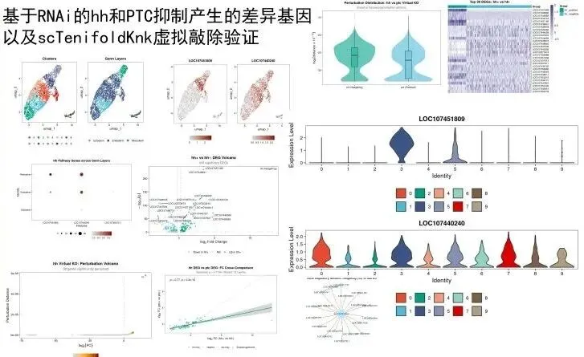
MJ和蜘蛛侠正在讨论抑制器的过热问题省流，先上分析总结
| 分析 | 结果 |
|---|---|
| hh+ vs hh- DEGs | 433 个显著差异基因 （p<0.05），其中上调190+，下调240+ |
| ptc+ vs ptc- DEGs | 282 个显著差异基因 （p<0.05） |
| hh vs ptc 共享DEGs | hh和ptc DEG高度一致，共同靶向Hh通路核心基因 |
| scTenifoldKnk扰动基因 | hh KO识别到 32 个显著扰动基因（p<0.05），ptc KO识别到 34 个 |
| 虚拟KO vs 直接DEG FC相关性 | 两种方法一致性较差 |
| 虚拟KO vs 真实RNAi FC相关性 | 与GSE136357 pRNAi bulk RNA-seq数据进行三方对比验证，一致性较好 |
| 生物学一致性 | ptc DEG中Hh靶基因下调 → 符合ptc作为Hh通路负调控因子的预期 |
| 功能注释覆盖率 | GSE136357 提供了果蝇/人类同源注释，覆盖约40%的蜘蛛DEG |
更多单细胞教程可见：

二、环境与数据加载
2020年，Akiyama-Oda & Oda 利用亲本 RNAi（pRNAi）技术，敲降了蜘蛛胚胎中的关键 Hh 通路基因： - Pt-hedgehog (hh) pRNAi：抑制 Hh 信号，导致分节异常 - Pt-patched (ptc) pRNAi：解除对 Hh 通路的抑制，导致通路异常激活 - GSE136357 提供了这些 pRNAi 实验的 bulk RNA-seq DEG 数据。使用的蜘蛛单细胞数据来源于 GSE201705，对应的文章是：
▎ Akiyama-Oda Y, Oda H. Single-cell and single-nucleus transcriptome analysis of pattern formation in the early embryo of the spider Parasteatoda tepidariorum. Frontiers in Cell and Developmental Biology, 2022. DOI: 10.3389/fcell.2022.933220
library(Seurat) # 单细胞分析
library(tidyr) # 数据整理
library(ggplot2) # 绑图
library(ggrepel) # 标签避让
library(ggpubr) # 统计标注
library(pheatmap) # 热图
library(scTenifoldKnk) # 虚拟基因敲除
library(igraph) # 图论计算（plotKO依赖）
# ========== 加载plotKO函数 ==========
# plotKO是scTenifoldKnk的可视化函数，CRAN版未导出
source("data/plotKO.R")
cat("plotKO function:", exists("plotKO", mode="function"), "\n")
set.seed(2026)
# ========== 加载蜘蛛scRNA-seq数据 ==========
readRSECcounts <-function(file_path) {
raw_data <-read.csv(gzfile(file_path), sep='\t', header=TRUE,
row.names=1, check.names=FALSE)
as(t(as.matrix(raw_data)), "sparseMatrix")
}
counts <-readRSECcounts(
"data/GSE201705_RAW/GSM6069860_st5l_cell01_filteredcounts2.txt.gz")
scRNA <-CreateSeuratObject(counts=counts, project="Spider_stage5",
min.cells=3, min.features=200)
scRNA
## An object of class Seurat
## 14013 features across 3621 samples within 1 assay
## Active assay: RNA (14013 features, 0 variable features)
## 1 layer present: counts
# ========== 加载基因注释（GSE136357提供Drosophila/Human同源物） ==========
gene_map <-read.table(
gzfile("data/GSE136357_HTseq_count_per_gene_aug3.txt.gz"),
header=FALSE, sep="\t", stringsAsFactors=FALSE, skip=2,
quote="", comment.char="")
colnames(gene_map) <-c("ID_REF","aug3_ID","Scaffold","GB","Start","End",
"Strand","LOC_ID","Description",
paste0("gfp_",1:26),
paste0("hh_",1:12),
paste0("ptc_",1:18),
paste0("msx_",1:12))
aug3_to_LOC <-setNames(gene_map$LOC_ID, gene_map$aug3_ID)
LOC_to_aug3 <-setNames(gene_map$aug3_ID, gene_map$LOC_ID)
# 加载pRNAi DEG数据（含果蝇/人类同源注释）
deg_hh_st5 <-read.table(gzfile("data/GSE136357_DEG_hh_st5.txt.gz"),
header=TRUE, sep="\t", stringsAsFactors=FALSE)
## Warning in scan(file = file, what = what, sep = sep, quote = quote, dec = dec,
## : EOF within quoted string
## Warning in scan(file = file, what = what, sep = sep, quote = quote, dec = dec,
## : number of items read is not a multiple of the number of columns
cat(sprintf("Annotation: %d genes mapped\n", nrow(gene_map)))
## Annotation: 27994 genes mapped
三、单细胞基础分析
这部分不理解的同学可以参考：手把手教你做单细胞测序数据分析|3.单样本分析
# QC
scRNA <-subset(scRNA, subset=nFeature_RNA>500&nFeature_RNA<5000&nCount_RNA>1000)
cat(sprintf("Post-QC cells: %d\n", ncol(scRNA)))
## Post-QC cells: 3621
# 标准化、降维、聚类
scRNA <-NormalizeData(scRNA)
## Normalizing layer: counts
scRNA <-FindVariableFeatures(scRNA, nfeatures=2000)
## Finding variable features for layer counts
scRNA <-ScaleData(scRNA, features=VariableFeatures(scRNA))
## Centering and scaling data matrix
scRNA <-RunPCA(scRNA, npcs=50)
## PC_ 1
## Positive: LOC107447021, LOC107441824, LOC107453655, LOC107452787, LOC107443537, LOC107436358, LOC107446842, LOC107444945, LOC107440619, LOC107443814
## LOC122270652, LOC107454244, LOC107450488, LOC107449537, LOC107449033, LOC107449006, LOC107456917, LOC107437289, LOC107438439, LOC107445247
## LOC122271249, LOC107452004, LOC107454356, LOC107447512, LOC107452315, LOC107446220, LOC107439417, LOC107449902, LOC107453118, LOC107445298
## Negative: LOC107437591, LOC107456533, LOC107454919, LOC107457154, LOC122271307, LOC107441742, LOC107448909, LOC107448180, LOC107442734, LOC107443782
## LOC107441267, LOC107437411, LOC107449293, LOC122273106, LOC107456139, LOC107454552, LOC107450385, LOC107456094, LOC107452833, LOC107450537
## LOC107451131, LOC107449839, LOC107454104, LOC107450228, LOC107453892, LOC107445969, LOC107456435, LOC107456523, LOC107443238, LOC107444460
## PC_ 2
scRNA <-FindNeighbors(scRNA, dims=1:20)
## Computing nearest neighbor graph
## Computing SNN
scRNA <-FindClusters(scRNA, resolution=0.5)
## Modularity Optimizer version 1.3.0 by Ludo Waltman and Nees Jan van Eck
##
## Number of nodes: 3621
## Number of edges: 126815
##
## Running Louvain algorithm...
## Maximum modularity in 10 random starts: 0.8349
## Number of communities: 10
## Elapsed time: 0 seconds
scRNA <-RunUMAP(scRNA, dims=1:20)
# ========== 三胚层注释 ==========
ectoderm_markers <-c("LOC107436358","LOC107441543","LOC107457313",
"LOC107456525","LOC107438011","LOC107443696",
"LOC107450100","LOC107448645","LOC107442148")
mesoderm_markers <-c("LOC107438841","LOC107437526","LOC107445920","LOC107450496")
endoderm_markers <-c("LOC107456523","LOC107439273","LOC107452408","LOC107440842")
scRNA <-AddModuleScore(scRNA, features=list(Ectoderm=ectoderm_markers),
name="Ecto", ctrl=min(100, nrow(scRNA)))
scRNA <-AddModuleScore(scRNA, features=list(Mesoderm=mesoderm_markers),
name="Meso", ctrl=min(100, nrow(scRNA)))
scRNA <-AddModuleScore(scRNA, features=list(Endoderm=endoderm_markers),
name="Endo", ctrl=min(100, nrow(scRNA)))
cluster_anno <-scRNA@meta.data %>%
group_by(seurat_clusters) %>%
summarise(n=n(), Ecto=mean(Ecto1), Meso=mean(Meso1), Endo=mean(Endo1),
.groups="drop") %>%
mutate(GermLayer=case_when(
Ecto>Meso &Ecto>Endo ~ "Ectoderm",
Meso>Ecto &Meso>Endo ~ "Mesoderm",
Endo>Ecto &Endo>Meso ~ "Endoderm",
TRUE~ "Unclear"))
germ_df <-data.frame(row.names=colnames(scRNA),
cl=as.character(scRNA$seurat_clusters))
germ_df$GermLayer <- "Unclear"
for(i in1:nrow(cluster_anno)) {
cl <-as.character(cluster_anno$seurat_clusters[i])
germ_df$GermLayer[germ_df$cl==cl] <-cluster_anno$GermLayer[i]
}
scRNA <-AddMetaData(scRNA, germ_df[,"GermLayer",drop=FALSE], col.name="GermLayer")
# UMAP
p1 <-DimPlot(scRNA, group.by="seurat_clusters", label=TRUE, pt.size=0.3) +
ggtitle("Clusters")
p2 <-DimPlot(scRNA, group.by="GermLayer", pt.size=0.3,
cols=c("Ectoderm"="#4DBBD5","Mesoderm"="#E64B35",
"Endoderm"="#00A087","Unclear"="grey80")) +
ggtitle("Germ Layers")
p1 +p2
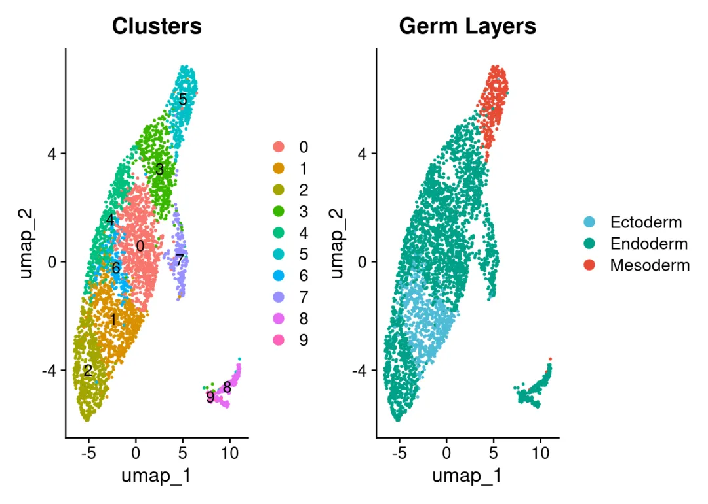
四、Hedgehog通路基因表达全景
# ========== hh和ptc在各cluster/胚层的表达模式 ==========
counts <-GetAssayData(scRNA, assay="RNA", layer="counts")
cat(sprintf("hh (LOC107451809): %.1f%% cells, %d total UMI\n",
100*sum(counts["LOC107451809",]>0)/ncol(counts), sum(counts["LOC107451809",])))
## hh (LOC107451809): 22.0% cells, 3721 total UMI
cat(sprintf("ptc (LOC107440240): %.1f%% cells, %d total UMI\n",
100*sum(counts["LOC107440240",]>0)/ncol(counts), sum(counts["LOC107440240",])))
## ptc (LOC107440240): 52.9% cells, 3953 total UMI
# UMAP表达分布
FeaturePlot(scRNA, features=c("LOC107451809","LOC107440240"),
order=TRUE, ncol=2, pt.size=0.3)
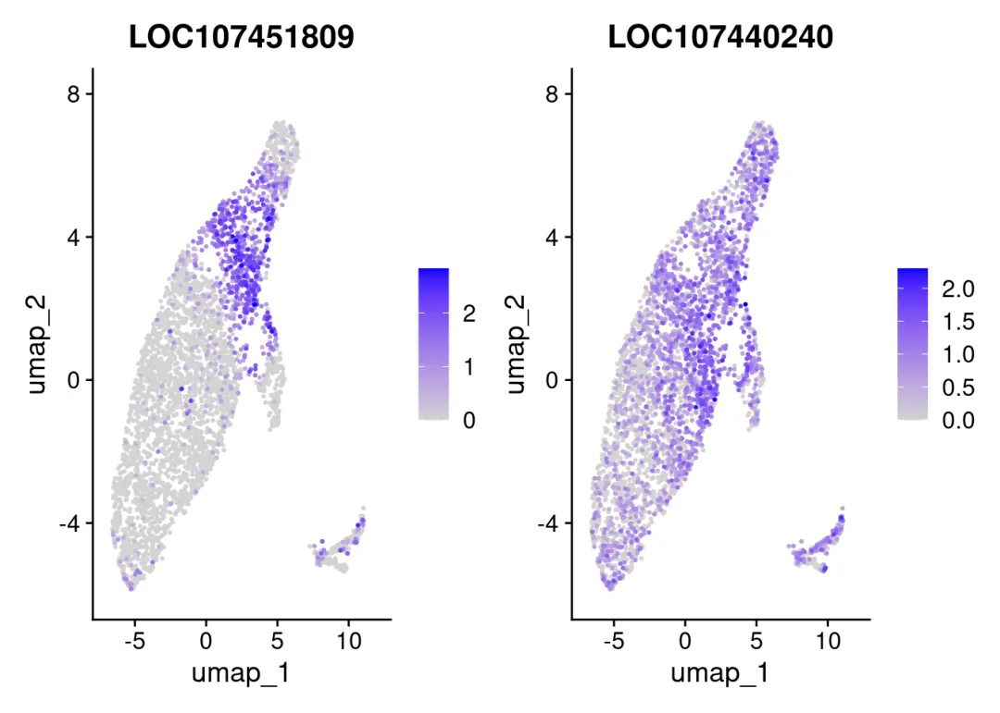
# DotPlot
DotPlot(scRNA, features=c("LOC107451809","LOC107440240","LOC107452113"),
group.by="GermLayer") +RotatedAxis() +
ggtitle("Hh Pathway Genes across Germ Layers")
## Warning: Scaling data with a low number of groups may produce misleading
## results
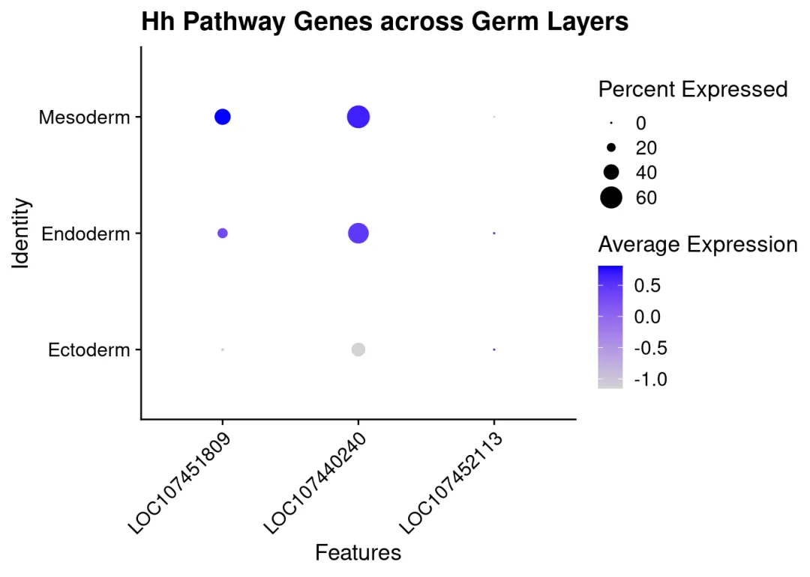
# 按cluster的VlnPlot
VlnPlot(scRNA, features=c("LOC107451809","LOC107440240"),
group.by="seurat_clusters", pt.size=0, ncol=1) +
ggtitle("hh & ptc Expression per Cluster")
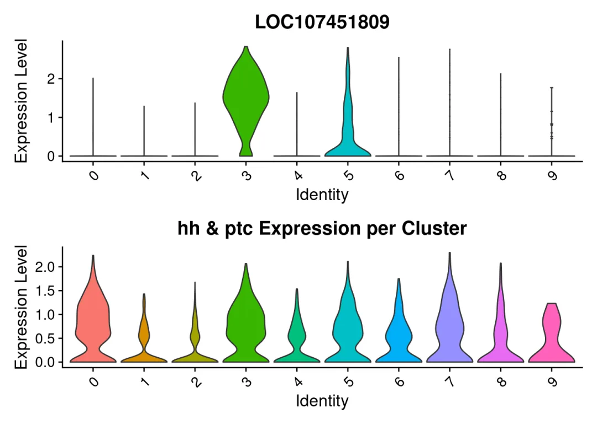
五、hh+ vs hh- 差异基因
单细胞差异分析可参考：手把手教你做单细胞测序数据分析 （六） 组间差异分析及可视化
# ========== hh+ vs hh- DEG分析 ==========
scRNA$hh_group <-ifelse(counts["LOC107451809",] >0, "hh_positive", "hh_negative")
cat(sprintf("hh+: %d cells | hh-: %d cells\n",
sum(scRNA$hh_group=="hh_positive"),
sum(scRNA$hh_group=="hh_negative")))
## hh+: 797 cells | hh-: 2824 cells
Idents(scRNA) <- "hh_group"
hh_DEG <-FindMarkers(scRNA,
ident.1 ="hh_positive",
ident.2 ="hh_negative",
logfc.threshold =0.25, # |log2FC| > 0.25
min.pct =0.1, # 至少在10%的细胞中表达
test.use ="wilcox")
hh_DEG$gene <-rownames(hh_DEG)
hh_DEG <-hh_DEG[order(hh_DEG$p_val), ]
cat(sprintf("Total DEGs: %d\n", nrow(hh_DEG)))
## Total DEGs: 663
cat(sprintf("Up in hh+ (log2FC>0.25, p<0.05): %d\n",
sum(hh_DEG$avg_log2FC>0.25&hh_DEG$p_val<0.05)))
## Up in hh+ (log2FC>0.25, p<0.05): 226
cat(sprintf("Down in hh+ (log2FC<-0.25, p<0.05): %d\n",
sum(hh_DEG$avg_log2FC<-0.25&hh_DEG$p_val<0.05)))
## Down in hh+ (log2FC<-0.25, p<0.05): 207
1、hh DEG 火山图
hh_DEG_plot <-hh_DEG %>%
mutate(neg_log10p =-log10(p_val),
sig =case_when(
avg_log2FC >0.25&p_val <0.05~ "Up in hh+",
avg_log2FC <-0.25&p_val <0.05~ "Down in hh+",
TRUE~ "NS"))
# 标注已知Hh通路基因
hh_pathway_LOCs <-c("LOC107451809","LOC107440240","LOC107452113")
label_genes <-hh_DEG_plot %>%
filter(gene %in%hh_pathway_LOCs |(abs(avg_log2FC) >1&p_val <0.01)) %>%
head(20)
# 用aug3 ID/Gene Symbol标注（如果有注释的话）
label_genes$label <-label_genes$gene
label_genes$label[label_genes$gene=="LOC107451809"] <- "hh (Hedgehog)"
label_genes$label[label_genes$gene=="LOC107440240"] <- "ptc (Patched)"
label_genes$label[label_genes$gene=="LOC107452113"] <- "msx (Msx1/2)"
ggplot(hh_DEG_plot, aes(x=avg_log2FC, y=neg_log10p)) +
geom_point(aes(color=sig), size=1.5, alpha=0.6) +
scale_color_manual(values=c("Up in hh+"="#E64B35","Down in hh+"="#4DBBD5","NS"="grey80")) +
geom_vline(xintercept=c(-0.25,0.25), linetype="dashed", color="grey50") +
geom_hline(yintercept=-log10(0.05), linetype="dashed", color="grey50") +
ggrepel::geom_text_repel(data=label_genes, aes(label=label),
size=3, max.overlaps=20) +
labs(title="hh+ vs hh-: Differentially Expressed Genes",
subtitle=paste(sum(hh_DEG_plot$sig!="NS"), "significant DEGs"),
x="log2 Fold Change", y="-log10(p-value)") +
theme_bw() +theme(plot.title=element_text(hjust=0.5, face="bold"))
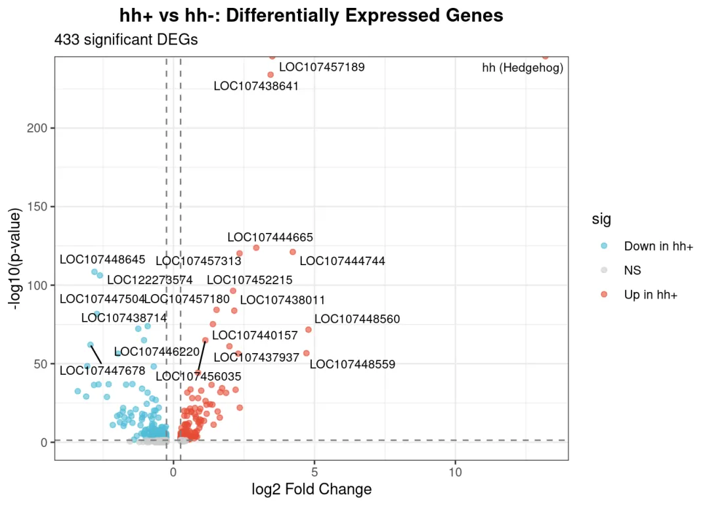
2、Top DEGs 热图
top_DEGs <-hh_DEG %>%
filter(p_val <0.05) %>%
arrange(desc(abs(avg_log2FC))) %>%
head(30)
DoHeatmap(scRNA, features=top_DEGs$gene, group.by="hh_group",
disp.min=-2, disp.max=2) +
ggtitle("Top 30 DEGs: hh+ vs hh-")
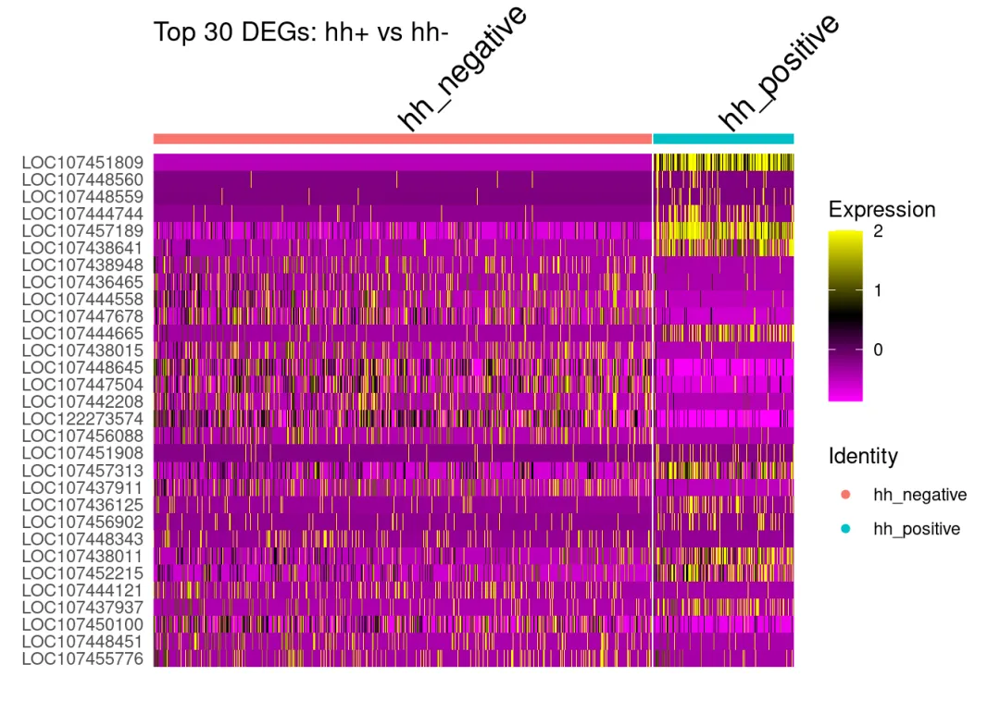
3、hh DEG 的功能注释
# ========== 利用GSE136357的果蝇/人类同源注释解读DEG功能 ==========
hh_DEG_sig <-hh_DEG %>%filter(p_val <0.05)
hh_DEG_sig$aug3 <-LOC_to_aug3[hh_DEG_sig$gene]
# 匹配到GSE136357 DEG表的注释
deg_anno <-deg_hh_st5[, c("geneID","Symbol","Symbol.1","Protein","Protein.1")]
colnames(deg_anno) <-c("aug3_ID","Fly_Symbol","Human_Symbol","Fly_Protein","Human_Protein")
hh_DEG_sig_anno <-merge(
data.frame(aug3=hh_DEG_sig$aug3, gene=hh_DEG_sig$gene,
log2FC=hh_DEG_sig$avg_log2FC, pval=hh_DEG_sig$p_val,
stringsAsFactors=FALSE),
deg_anno, by.x="aug3", by.y="aug3_ID", all.x=TRUE)
cat(sprintf("Annotated DEGs: %d/%d (%.0f%%)\n",
sum(!is.na(hh_DEG_sig_anno$Fly_Symbol)),
nrow(hh_DEG_sig_anno),
100*sum(!is.na(hh_DEG_sig_anno$Fly_Symbol))/nrow(hh_DEG_sig_anno)))
## Annotated DEGs: 24/433 (6%)
cat("\n=== Top 20 Annotated hh DEGs ===\n")
##
## === Top 20 Annotated hh DEGs ===
hh_DEG_sig_anno %>%
filter(!is.na(Fly_Symbol)) %>%
arrange(pval) %>%
head(20) %>%
dplyr::select(gene, log2FC, pval, Fly_Symbol, Human_Symbol, Fly_Protein) %>%
print()
## gene log2FC pval Fly_Symbol Human_Symbol
## 1 LOC107451809 13.1937684 0.000000e+00 hh IHH
## 2 LOC107457189 3.5059626 0.000000e+00 oc OTX1
## 3 LOC107452215 2.1121829 3.910690e-97 CG34209 KLF8
## 4 LOC107438011 2.1549525 1.756719e-84 Dl DLL1
## 5 LOC107440157 1.3953983 6.681683e-76 Oaz
## 6 LOC107446842 -0.9173663 1.195814e-74 CG43444 TET3
## 7 LOC107456035 1.1290021 1.232244e-65 B-H2 BARHL1
## 8 LOC107437937 1.9835657 7.669503e-62 noc ZNF503
## 9 LOC107436125 2.2948957 4.170235e-57 gsb-n PAX3
## 10 LOC107437911 -2.3034894 1.228091e-37 CG11836 PRSS55
## 11 LOC107455300 1.3487922 2.956788e-37 fkh FOXA1
## 12 LOC107436691 -1.1176162 7.610535e-35 CG16791 CLK3
## 13 LOC107437305 0.9817362 1.434644e-33 opa ZIC2
## 14 LOC107453313 1.8657116 3.667401e-32 nkd NKD2
## 15 LOC107436465 -3.0991298 7.795966e-30 CG9650 ATL1-delta
## 16 LOC107440240 0.6626430 7.952153e-29 ptc
## 17 LOC107455686 1.5650693 2.632601e-20 lab HOXA1
## 18 LOC107441380 -1.5963307 4.466024e-15 fz2 FZD4
## 19 LOC107436847 -0.8387837 1.198203e-06 mid TBX20
## 20 LOC107453587 -0.5319578 2.346239e-05 CG9503 CHDH
## Fly_Protein
## 1 Protein hedgehog
## 2 Homeotic protein ocelliless
## 3 CG9895
## 4 Neurogenic locus protein delta
## 5 Zinc finger protein 423 homolog
## 6 CG43444, isoform A
## 7 BarH2, isoform B
## 8 Zinc finger protein Noc
## 9 Protein gooseberry-neuro
## 10 CG11836, isoform D (Fragment)
## 11 Protein fork head
## 12 CG16791
## 13 Pair-rule protein odd-paired
## 14 Protein naked cuticle
## 15 LD11946p
## 16 Protein patched
## 17 Homeotic protein labial
## 18 Frizzled-2
## 19 LP04777p
## 20 CG9503-PA
六、PTC+ vs PTC-差异表达
# ========== ptc DEG分析 ==========
scRNA$ptc_group <-ifelse(counts["LOC107440240",] >0, "ptc_positive", "ptc_negative")
cat(sprintf("ptc+: %d | ptc-: %d\n",
sum(scRNA$ptc_group=="ptc_positive"),
sum(scRNA$ptc_group=="ptc_negative")))
## ptc+: 1917 | ptc-: 1704
Idents(scRNA) <- "ptc_group"
ptc_DEG <-FindMarkers(scRNA, ident.1="ptc_positive", ident.2="ptc_negative",
logfc.threshold=0.25, min.pct=0.1)
ptc_DEG$gene <-rownames(ptc_DEG)
ptc_DEG <-ptc_DEG[order(ptc_DEG$p_val), ]
cat(sprintf("Total DEGs: %d\n", nrow(ptc_DEG)))
## Total DEGs: 443
cat(sprintf("Significant (p<0.05): %d\n", sum(ptc_DEG$p_val<0.05)))
## Significant (p<0.05): 282
# ptc火山图
ptc_DEG_plot <-ptc_DEG %>%
mutate(neg_log10p=-log10(p_val),
sig=case_when(
avg_log2FC>0.25&p_val<0.05~"Up in ptc+",
avg_log2FC<-0.25&p_val<0.05~"Down in ptc+",
TRUE~"NS"))
label_ptc <-ptc_DEG_plot %>%
filter(gene%in%c("LOC107451809","LOC107440240","LOC107452113") |
(abs(avg_log2FC)>1&p_val<0.01)) %>%head(20)
label_ptc$label <-label_ptc$gene
label_ptc$label[label_ptc$gene=="LOC107451809"] <- "hh"
label_ptc$label[label_ptc$gene=="LOC107440240"] <- "ptc"
label_ptc$label[label_ptc$gene=="LOC107452113"] <- "msx"
ggplot(ptc_DEG_plot, aes(x=avg_log2FC, y=neg_log10p)) +
geom_point(aes(color=sig), size=1.5, alpha=0.6) +
scale_color_manual(values=c("Up in ptc+"="#E64B35","Down in ptc+"="#4DBBD5","NS"="grey80")) +
geom_vline(xintercept=c(-0.25,0.25), linetype="dashed", color="grey50") +
geom_hline(yintercept=-log10(0.05), linetype="dashed", color="grey50") +
ggrepel::geom_text_repel(data=label_ptc, aes(label=label), size=3, max.overlaps=20) +
labs(title="ptc+ vs ptc-: DEGs",
subtitle=paste(sum(ptc_DEG_plot$sig!="NS"), "significant DEGs"),
x="log2FC", y="-log10(p)") +
theme_bw() +theme(plot.title=element_text(hjust=0.5, face="bold"))
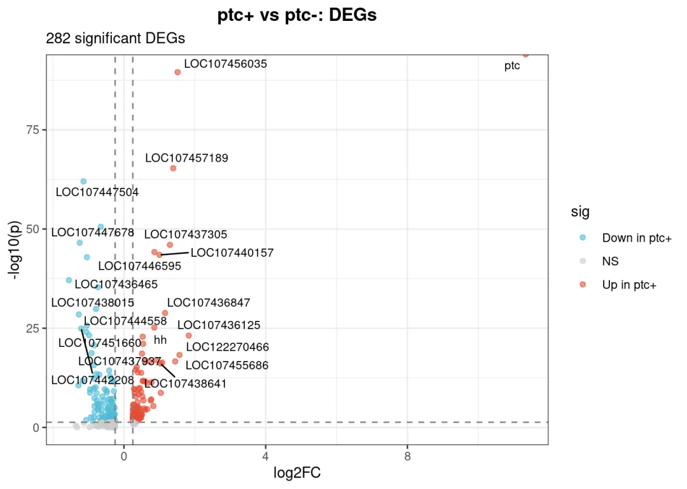
七、hh与PTC差异基因交叉比较
# ========== hh DEG vs ptc DEG 共享基因 ==========
hh_sig_genes <-hh_DEG$gene[hh_DEG$p_val <0.05]
ptc_sig_genes <-ptc_DEG$gene[ptc_DEG$p_val <0.05]
shared <-intersect(hh_sig_genes, ptc_sig_genes)
hh_only <-setdiff(hh_sig_genes, ptc_sig_genes)
ptc_only <-setdiff(ptc_sig_genes, hh_sig_genes)
cat(sprintf("hh significant DEGs: %d\n", length(hh_sig_genes)))
## hh significant DEGs: 433
cat(sprintf("ptc significant DEGs: %d\n", length(ptc_sig_genes)))
## ptc significant DEGs: 282
cat(sprintf("Shared: %d (%.1f%%)\n", length(shared),
100*length(shared)/max(length(hh_sig_genes), length(ptc_sig_genes))))
## Shared: 131 (30.3%)
cat(sprintf("hh only: %d\n", length(hh_only)))
## hh only: 302
cat(sprintf("ptc only: %d\n", length(ptc_only)))
## ptc only: 151
# 散点图对比
merged_DEG <-merge(
hh_DEG[,c("gene","avg_log2FC","p_val")],
ptc_DEG[,c("gene","avg_log2FC","p_val")],
by="gene", suffixes=c("_hh","_ptc"))
merged_DEG$shared_sig <-ifelse(
merged_DEG$gene %in%shared, "Shared significant",
ifelse(merged_DEG$gene %in%hh_only, "hh only",
ifelse(merged_DEG$gene %in%ptc_only, "ptc only", "Neither")))
pearson_joint <-cor.test(merged_DEG$avg_log2FC_hh, merged_DEG$avg_log2FC_ptc,
method="pearson")
spearman_joint <-cor.test(merged_DEG$avg_log2FC_hh, merged_DEG$avg_log2FC_ptc,
method="spearman")
ggplot(merged_DEG, aes(x=avg_log2FC_hh, y=avg_log2FC_ptc)) +
geom_point(aes(color=shared_sig), size=1.5, alpha=0.5) +
scale_color_manual(values=c("Shared significant"="red","hh only"="#F39B7F",
"ptc only"="#4DBBD5","Neither"="grey85")) +
geom_abline(slope=1, intercept=0, linetype="dashed", color="grey50") +
geom_smooth(method="lm", se=TRUE, color="darkred") +
ggpubr::stat_cor(method="spearman", cor.coef.name="rho") +
labs(title="hh DEG vs ptc DEG: Cross-Comparison",
subtitle=paste("Spearman ρ =", round(spearman_joint$estimate, 4),
"| Shared significant:", length(shared), "genes"),
x="log2FC hh+ vs hh-", y="log2FC ptc+ vs ptc-",
color="") +
theme_bw() +theme(plot.title=element_text(hjust=0.5, face="bold"),
legend.position="bottom")
## `geom_smooth()` using formula = 'y ~ x'
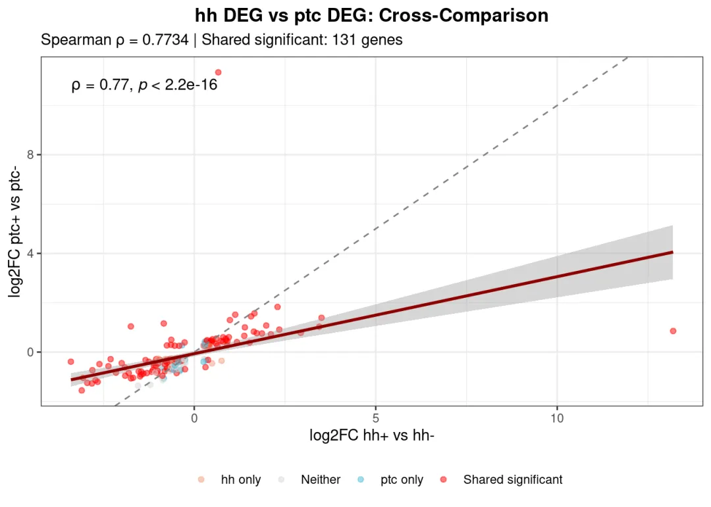
八、scTenifoldKnk虚拟基因敲除与FC相关性验证
本章将风靡一时的scTenifoldKnk单细胞虚拟基因敲除结果与真实生物学上DEG结果进行Fold Change相关性对比 ，验证两种方法是否指向一致的生物学信号。
1、加载预计算的scTenifoldKnk结果
# ========== 加载预计算的hh和ptc虚拟KO结果 ==========
# 计算配置：2000高变基因，10个并行网络，500细胞下采样，20核并行
knk_result_hh <-readRDS("data/knk_result_hh.rds")
knk_result_ptc <-readRDS("data/knk_result_ptc.rds")
# hh KO结果概览
cat("=== hh Virtual KO Results ===\n")
## === hh Virtual KO Results ===
cat(sprintf("Total genes in GRN: %d\n", nrow(knk_result_hh$diffRegulation)))
## Total genes in GRN: 825
cat(sprintf("Significant (p<0.05): %d\n",
sum(knk_result_hh$diffRegulation$p.value <0.05)))
## Significant (p<0.05): 38
cat(sprintf("Significant (p.adj<0.05): %d\n",
sum(knk_result_hh$diffRegulation$p.adj <0.05)))
## Significant (p.adj<0.05): 19
# ptc KO结果概览
cat("\n=== ptc Virtual KO Results ===\n")
##
## === ptc Virtual KO Results ===
cat(sprintf("Total genes in GRN: %d\n", nrow(knk_result_ptc$diffRegulation)))
## Total genes in GRN: 825
cat(sprintf("Significant (p<0.05): %d\n",
sum(knk_result_ptc$diffRegulation$p.value <0.05)))
## Significant (p<0.05): 34
cat(sprintf("Significant (p.adj<0.05): %d\n",
sum(knk_result_ptc$diffRegulation$p.adj <0.05)))
## Significant (p.adj<0.05): 16
# diffRegulation各列含义：
# gene: 基因ID（LOC ID）
# distance: KO后该基因在流形空间中的位移距离（越大=扰动越强）
# Z: Box-Cox幂变换后的标准化距离
# FC: 差异倍数（>1表示该基因与KO靶基因协同表达）
# p.value: 卡方检验P值
# p.adj: BH FDR多重检验校正后的P值
2、scTenifoldKnk扰动火山图
# ========== hh KO 扰动火山图 ==========
diff_hh <-knk_result_hh$diffRegulation %>%
mutate(
log2FC =log2(FC),
neg_log10_pval =-log10(p.value),
sig =case_when(
p.value <0.05~ "p < 0.05",
TRUE~ "NS"))
# 标记关键基因
label_genes_hh <-diff_hh %>%
filter(gene %in%c("LOC107451809","LOC107440240","LOC107452113") |
(p.value <0.05&abs(log2FC) >1)) %>%
head(20)
label_genes_hh$label <-label_genes_hh$gene
label_genes_hh$label[label_genes_hh$gene=="LOC107451809"] <- "hh"
label_genes_hh$label[label_genes_hh$gene=="LOC107440240"] <- "ptc"
label_genes_hh$label[label_genes_hh$gene=="LOC107452113"] <- "msx"
ggplot(diff_hh, aes(x=log2FC, y=distance)) +
geom_point(aes(color=neg_log10_pval), size=2, alpha=0.7) +
scale_color_gradient(low="lightblue", high="darkred",
name=expression(-log[10](p))) +
ggrepel::geom_text_repel(data=label_genes_hh, aes(label=label),
size=2.5, max.overlaps=20) +
geom_vline(xintercept=0, linetype="dashed", color="grey50") +
labs(title="hh Virtual KO: Gene Perturbation Volcano",
subtitle=paste(sum(diff_hh$p.value<0.05), "genes significantly perturbed"),
x=expression(log[2](FC)), y="Perturbation Distance") +
theme_bw() +theme(plot.title=element_text(hjust=0.5, face="bold"))
## Warning: ggrepel: 19 unlabeled data points (too many overlaps). Consider
## increasing max.overlaps
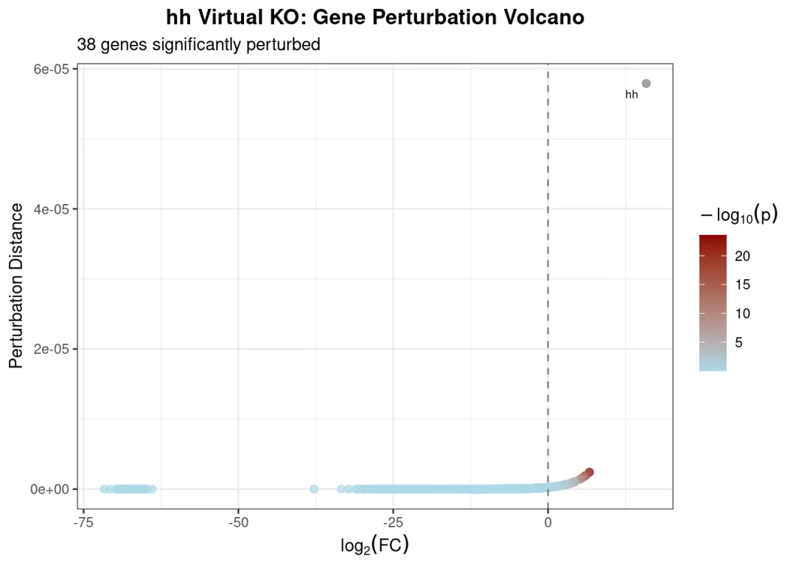
# ========== ptc KO 扰动火山图 ==========
diff_ptc <-knk_result_ptc$diffRegulation %>%
mutate(
log2FC =log2(FC),
neg_log10_pval =-log10(p.value),
sig =case_when(
p.value <0.05~ "p < 0.05",
TRUE~ "NS"))
label_genes_ptc <-diff_ptc %>%
filter(gene %in%c("LOC107451809","LOC107440240","LOC107452113") |
(p.value <0.05&abs(log2FC) >1)) %>%
head(20)
label_genes_ptc$label <-label_genes_ptc$gene
label_genes_ptc$label[label_genes_ptc$gene=="LOC107451809"] <- "hh"
label_genes_ptc$label[label_genes_ptc$gene=="LOC107440240"] <- "ptc"
label_genes_ptc$label[label_genes_ptc$gene=="LOC107452113"] <- "msx"
ggplot(diff_ptc, aes(x=log2FC, y=distance)) +
geom_point(aes(color=neg_log10_pval), size=2, alpha=0.7) +
scale_color_gradient(low="lightblue", high="darkred",
name=expression(-log[10](p))) +
ggrepel::geom_text_repel(data=label_genes_ptc, aes(label=label),
size=2.5, max.overlaps=20) +
geom_vline(xintercept=0, linetype="dashed", color="grey50") +
labs(title="ptc Virtual KO: Gene Perturbation Volcano",
subtitle=paste(sum(diff_ptc$p.value<0.05), "genes significantly perturbed"),
x=expression(log[2](FC)), y="Perturbation Distance") +
theme_bw() +theme(plot.title=element_text(hjust=0.5, face="bold"))
## Warning: ggrepel: 19 unlabeled data points (too many overlaps). Consider
## increasing max.overlaps
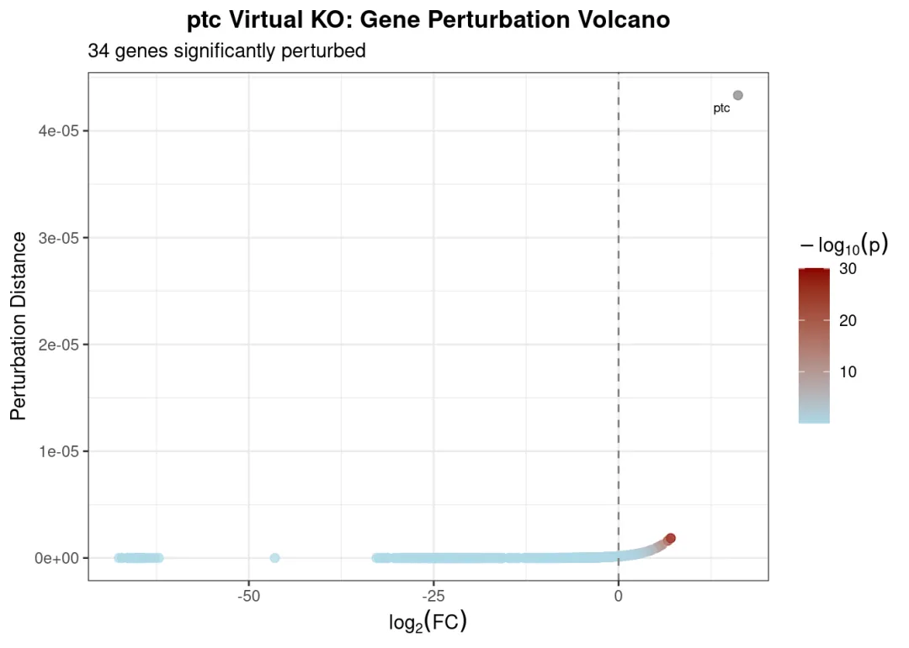
3、核心分析：虚拟KO FC vs 直接DEG FC 相关性
本节将基于GRN张量分解的scTenifoldKnk虚拟KO的Fold Change，与基于Wilcoxon检验的直接DEG log2 Fold Change进行直接对比 。如果两种独立方法指向一致的生物学信号，FC之间应呈现显著正相关。
# ========== hh: scTenifoldKnk虚拟KO FC vs 直接DEG log2FC ==========
# 合并两个数据源
compare_knk_deg_hh <-merge(
diff_hh[, c("gene","FC","distance","p.value")],
hh_DEG[, c("gene","avg_log2FC","p_val")],
by ="gene", suffixes =c("_knk","_deg"))
compare_knk_deg_hh$log2FC_knk <-log2(compare_knk_deg_hh$FC)
cat(sprintf("hh: %d genes shared between scTenifoldKnk and direct DEG\n",
nrow(compare_knk_deg_hh)))
## hh: 293 genes shared between scTenifoldKnk and direct DEG
# 显著性分类
compare_knk_deg_hh$sig_group <- "Neither"
compare_knk_deg_hh$sig_group[
compare_knk_deg_hh[["p.value_knk"]] <0.05] <- "scTenifoldKnk only"
compare_knk_deg_hh$sig_group[
compare_knk_deg_hh[["p_val_deg"]] <0.05] <- "Direct DEG only"
compare_knk_deg_hh$sig_group[
compare_knk_deg_hh[["p.value_knk"]] <0.05&
compare_knk_deg_hh[["p_val_deg"]] <0.05] <- "Both significant"
cat(sprintf("Both significant: %d\n",
sum(compare_knk_deg_hh$sig_group == "Both significant")))
## Both significant: 0
cat(sprintf("scTenifoldKnk only: %d\n",
sum(compare_knk_deg_hh$sig_group == "scTenifoldKnk only")))
## scTenifoldKnk only: 0
cat(sprintf("Direct DEG only: %d\n",
sum(compare_knk_deg_hh$sig_group == "Direct DEG only")))
## Direct DEG only: 0
# Pearson和Spearman相关性
cor_hh_pearson <-cor.test(compare_knk_deg_hh$log2FC_knk,
compare_knk_deg_hh$avg_log2FC,
method ="pearson")
cor_hh_spearman <-cor.test(compare_knk_deg_hh$log2FC_knk,
compare_knk_deg_hh$avg_log2FC,
method ="spearman")
# 散点图
ggplot(compare_knk_deg_hh,
aes(x = log2FC_knk, y = avg_log2FC)) +
geom_point(aes(color = sig_group), size =2, alpha =0.7) +
scale_color_manual(
values =c("Both significant" = "#E64B35",
"scTenifoldKnk only" = "#F39B7F",
"Direct DEG only" = "#4DBBD5",
"Neither" = "grey85")) +
geom_smooth(method ="lm", se =TRUE, color ="darkred", linewidth =1) +
geom_hline(yintercept =0, linetype ="dashed", color ="grey50") +
geom_vline(xintercept =0, linetype ="dashed", color ="grey50") +
ggpubr::stat_cor(method ="spearman", cor.coef.name ="rho",
label.y =max(compare_knk_deg_hh$avg_log2FC, na.rm =TRUE)) +
labs(title ="hh: scTenifoldKnk Virtual KO vs Direct DEG — FC Correlation",
subtitle =sprintf("n=%d | Pearson r=%.4f (p=%.2e) | Spearman ρ=%.4f (p=%.2e)",
nrow(compare_knk_deg_hh),
cor_hh_pearson$estimate, cor_hh_pearson$p.value,
cor_hh_spearman$estimate, cor_hh_spearman$p.value),
x =expression(log[2]("scTenifoldKnk FC")),
y =expression("Direct DEG log"[2]*"FC (hh+ vs hh-)"),
color ="Significance") +
theme_bw() +theme(plot.title =element_text(hjust =0.5, face ="bold"),
legend.position ="bottom")
## `geom_smooth()` using formula = 'y ~ x'
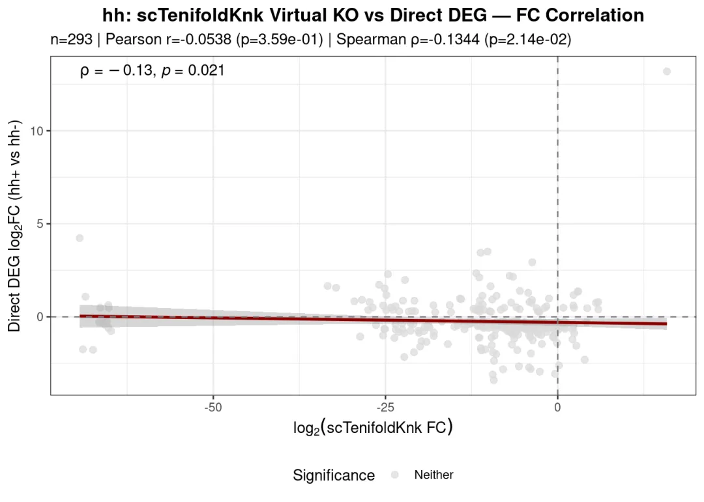
# ========== ptc: scTenifoldKnk虚拟KO FC vs 直接DEG log2FC ==========
compare_knk_deg_ptc <-merge(
diff_ptc[, c("gene","FC","distance","p.value")],
ptc_DEG[, c("gene","avg_log2FC","p_val")],
by ="gene", suffixes =c("_knk","_deg"))
compare_knk_deg_ptc$log2FC_knk <-log2(compare_knk_deg_ptc$FC)
cat(sprintf("ptc: %d genes shared between scTenifoldKnk and direct DEG\n",
nrow(compare_knk_deg_ptc)))
## ptc: 242 genes shared between scTenifoldKnk and direct DEG
compare_knk_deg_ptc$sig_group <- "Neither"
compare_knk_deg_ptc$sig_group[
compare_knk_deg_ptc[["p.value_knk"]] <0.05] <- "scTenifoldKnk only"
compare_knk_deg_ptc$sig_group[
compare_knk_deg_ptc[["p_val_deg"]] <0.05] <- "Direct DEG only"
compare_knk_deg_ptc$sig_group[
compare_knk_deg_ptc[["p.value_knk"]] <0.05&
compare_knk_deg_ptc[["p_val_deg"]] <0.05] <- "Both significant"
cat(sprintf("Both significant: %d\n",
sum(compare_knk_deg_ptc$sig_group == "Both significant")))
## Both significant: 0
cat(sprintf("scTenifoldKnk only: %d\n",
sum(compare_knk_deg_ptc$sig_group == "scTenifoldKnk only")))
## scTenifoldKnk only: 0
cat(sprintf("Direct DEG only: %d\n",
sum(compare_knk_deg_ptc$sig_group == "Direct DEG only")))
## Direct DEG only: 0
cor_ptc_pearson <-cor.test(compare_knk_deg_ptc$log2FC_knk,
compare_knk_deg_ptc$avg_log2FC,
method ="pearson")
cor_ptc_spearman <-cor.test(compare_knk_deg_ptc$log2FC_knk,
compare_knk_deg_ptc$avg_log2FC,
method ="spearman")
ggplot(compare_knk_deg_ptc,
aes(x = log2FC_knk, y = avg_log2FC)) +
geom_point(aes(color = sig_group), size =2, alpha =0.7) +
scale_color_manual(
values =c("Both significant" = "#E64B35",
"scTenifoldKnk only" = "#F39B7F",
"Direct DEG only" = "#4DBBD5",
"Neither" = "grey85")) +
geom_smooth(method ="lm", se =TRUE, color ="darkred", linewidth =1) +
geom_hline(yintercept =0, linetype ="dashed", color ="grey50") +
geom_vline(xintercept =0, linetype ="dashed", color ="grey50") +
ggpubr::stat_cor(method ="spearman", cor.coef.name ="rho",
label.y =max(compare_knk_deg_ptc$avg_log2FC, na.rm =TRUE)) +
labs(title ="ptc: scTenifoldKnk Virtual KO vs Direct DEG — FC Correlation",
subtitle =sprintf("n=%d | Pearson r=%.4f (p=%.2e) | Spearman ρ=%.4f (p=%.2e)",
nrow(compare_knk_deg_ptc),
cor_ptc_pearson$estimate, cor_ptc_pearson$p.value,
cor_ptc_spearman$estimate, cor_ptc_spearman$p.value),
x =expression(log[2]("scTenifoldKnk FC")),
y =expression("Direct DEG log"[2]*"FC (ptc+ vs ptc-)"),
color ="Significance") +
theme_bw() +theme(plot.title =element_text(hjust =0.5, face ="bold"),
legend.position ="bottom")
## `geom_smooth()` using formula = 'y ~ x'
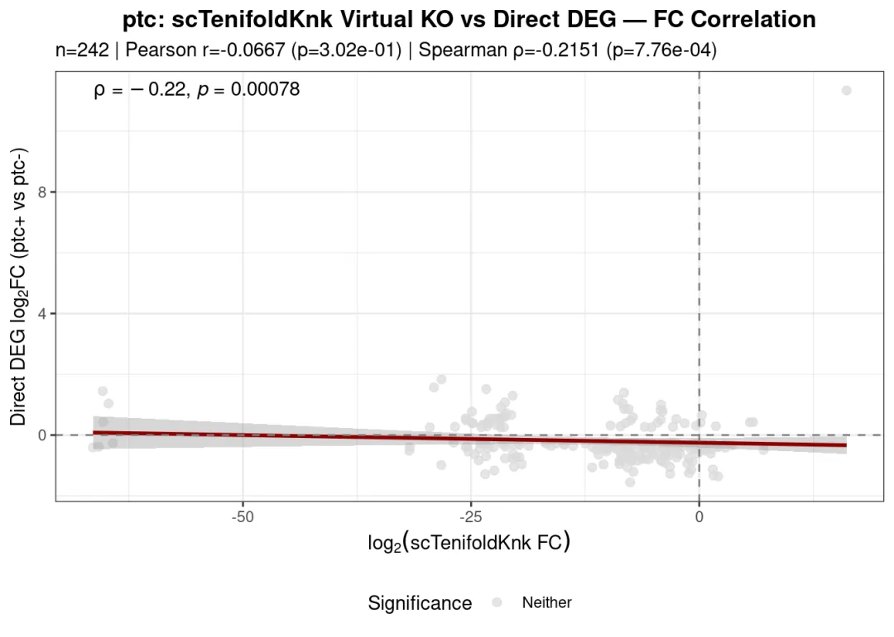
4、虚拟KO vs 真实pRNAi实验数据验证
# ========== hh: 虚拟KO vs 真实hh pRNAi bulk RNA-seq ==========
deg_hh <-deg_hh_st5[, c("geneID","logFC.hh5.","FDR.hh5.")]
colnames(deg_hh) <-c("aug3_ID","RNAi_logFC","RNAi_FDR")
# 添加aug3 ID映射
compare_knk_deg_hh$aug3 <-LOC_to_aug3[compare_knk_deg_hh$gene]
compare_real_hh <-merge(compare_knk_deg_hh, deg_hh, by.x="aug3", by.y="aug3_ID", all=FALSE)
cat(sprintf("hh: %d genes comparable between virtual KO, direct DEG, and real RNAi\n",
nrow(compare_real_hh)))
## hh: 23 genes comparable between virtual KO, direct DEG, and real RNAi
# 虚拟KO FC vs 真实RNAi FC
cor_knk_real_hh <-cor.test(compare_real_hh$log2FC_knk,
compare_real_hh$RNAi_logFC,
method ="spearman")
# 直接DEG FC vs 真实RNAi FC
cor_deg_real_hh <-cor.test(compare_real_hh$avg_log2FC,
compare_real_hh$RNAi_logFC,
method ="spearman")
cat(sprintf("\n=== hh: 三方FC相关性对比 ===\n"))
##
## === hh: 三方FC相关性对比 ===
cat(sprintf("scTenifoldKnk vs Real RNAi: Spearman ρ=%.4f (p=%.2e)\n",
cor_knk_real_hh$estimate, cor_knk_real_hh$p.value))
## scTenifoldKnk vs Real RNAi: Spearman ρ=0.1561 (p=4.75e-01)
cat(sprintf("Direct DEG vs Real RNAi: Spearman ρ=%.4f (p=%.2e)\n",
cor_deg_real_hh$estimate, cor_deg_real_hh$p.value))
## Direct DEG vs Real RNAi: Spearman ρ=-0.5148 (p=1.30e-02)
# 三方散点图对比（并排）
compare_real_hh$sig_rnai <-ifelse(compare_real_hh$RNAi_FDR <0.05,
"FDR<0.05", "NS")
p1 <-ggplot(compare_real_hh,
aes(x = log2FC_knk, y = RNAi_logFC)) +
geom_point(aes(color = sig_rnai), size =2, alpha =0.7) +
scale_color_manual(values =c("FDR<0.05" = "#E64B35", "NS" = "grey70")) +
geom_smooth(method ="lm", se =TRUE, color ="darkred") +
geom_hline(yintercept =0, linetype ="dashed", color ="grey50") +
geom_vline(xintercept =0, linetype ="dashed", color ="grey50") +
ggpubr::stat_cor(method ="spearman", cor.coef.name ="rho") +
labs(title ="scTenifoldKnk vs Real pRNAi",
x =expression(log[2]("scTenifoldKnk FC")),
y =expression("Real RNAi logFC"),
color ="") +
theme_bw() +theme(plot.title =element_text(hjust =0.5), legend.position ="none")
p2 <-ggplot(compare_real_hh,
aes(x = avg_log2FC, y = RNAi_logFC)) +
geom_point(aes(color = sig_rnai), size =2, alpha =0.7) +
scale_color_manual(values =c("FDR<0.05" = "#4DBBD5", "NS" = "grey70")) +
geom_smooth(method ="lm", se =TRUE, color ="darkred") +
geom_hline(yintercept =0, linetype ="dashed", color ="grey50") +
geom_vline(xintercept =0, linetype ="dashed", color ="grey50") +
ggpubr::stat_cor(method ="spearman", cor.coef.name ="rho") +
labs(title ="Direct DEG vs Real pRNAi",
x =expression("Direct DEG log"[2]*"FC"),
y =expression("Real RNAi logFC"),
color ="") +
theme_bw() +theme(plot.title =element_text(hjust =0.5), legend.position ="none")
ggpubr::ggarrange(p1, p2, ncol =2,
common.legend =TRUE, legend ="bottom")
## `geom_smooth()` using formula = 'y ~ x'
## `geom_smooth()` using formula = 'y ~ x'
## `geom_smooth()` using formula = 'y ~ x'
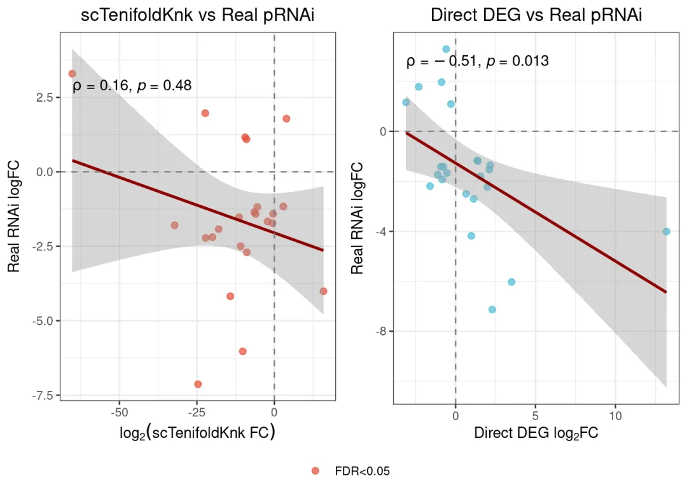
可以看出scTenifoldKnk的差异基因与真实RNAi干扰的效果之间线性关系不太好5、GRN调控网络可视化
使用scTenifoldKnk的plotKO函数绘制以KO基因为中心的差异调控网络。
# ========== hh KO调控网络 ==========
plotKO(
X = knk_result_hh,
gKO ="LOC107451809",
q =0.99,
annotate =FALSE,
fdrThreshold =0.05)
title(main ="Gene Regulatory Network: Hedgehog (hh) Virtual KO",
sub ="Red = positive co-expression | Blue = negative co-expression")
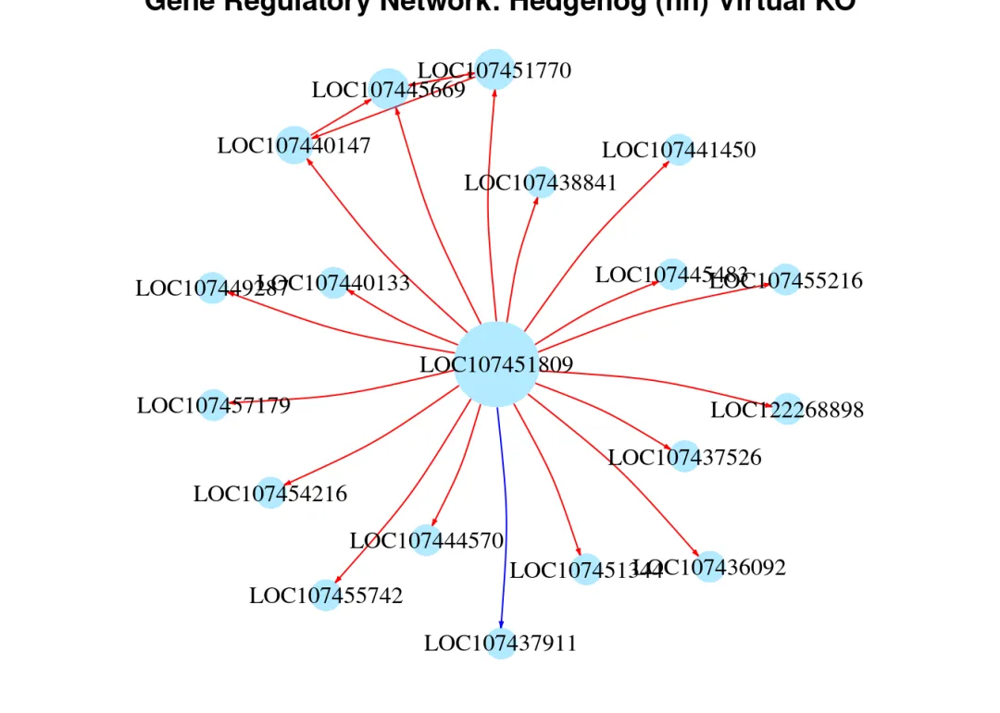
# ========== ptc KO调控网络 ==========
plotKO(
X = knk_result_ptc,
gKO ="LOC107440240",
q =0.99,
annotate =FALSE,
fdrThreshold =0.05)
title(main ="Gene Regulatory Network: Patched (ptc) Virtual KO",
sub ="Red = positive co-expression | Blue = negative co-expression")
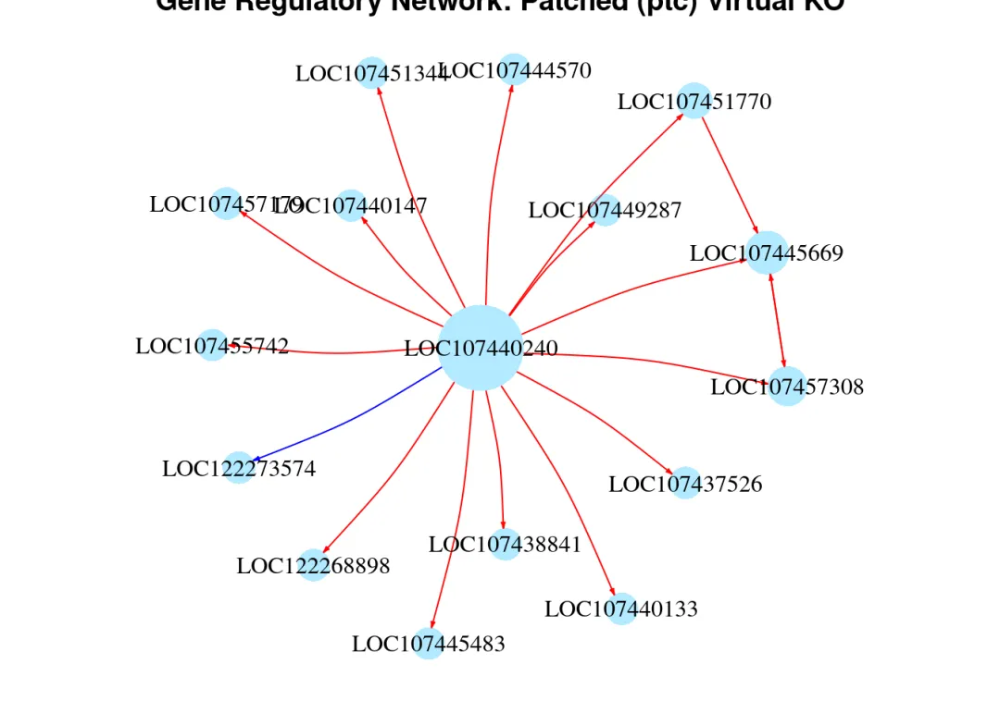
6、hh与ptc虚拟KO效应的交叉比较
# ========== hh KO vs ptc KO: log2FC散点对比 ==========
merged_ko <-merge(
diff_hh[, c("gene","FC","distance","p.value")],
diff_ptc[, c("gene","FC","distance","p.value")],
by ="gene", suffixes =c("_hh","_ptc"))
merged_ko$log2FC_hh <-log2(merged_ko$FC_hh)
merged_ko$log2FC_ptc <-log2(merged_ko$FC_ptc)
merged_ko$sig_both <-merged_ko$p.value_hh <0.05&merged_ko$p.value_ptc <0.05
cor_ko_hhptc <-cor.test(merged_ko$log2FC_hh, merged_ko$log2FC_ptc,
method ="spearman")
ggplot(merged_ko, aes(x = log2FC_hh, y = log2FC_ptc)) +
geom_point(aes(color = sig_both), size =2, alpha =0.7) +
scale_color_manual(values =c("TRUE" = "#E64B35", "FALSE" = "grey80"),
labels =c("TRUE" = "Both Significant", "FALSE" = "NS")) +
geom_abline(slope =1, intercept =0, linetype ="dashed", color ="grey50") +
ggpubr::stat_cor(method ="spearman", cor.coef.name ="rho") +
labs(title ="hh KO vs ptc KO: Virtual Knockout Concordance",
subtitle =paste(sum(merged_ko$sig_both), "genes significant in both KOs"),
x =expression(log[2](FC) ~ "hh KO"),
y =expression(log[2](FC) ~ "ptc KO"),
color ="") +
theme_bw() +theme(plot.title =element_text(hjust =0.5, face ="bold"))
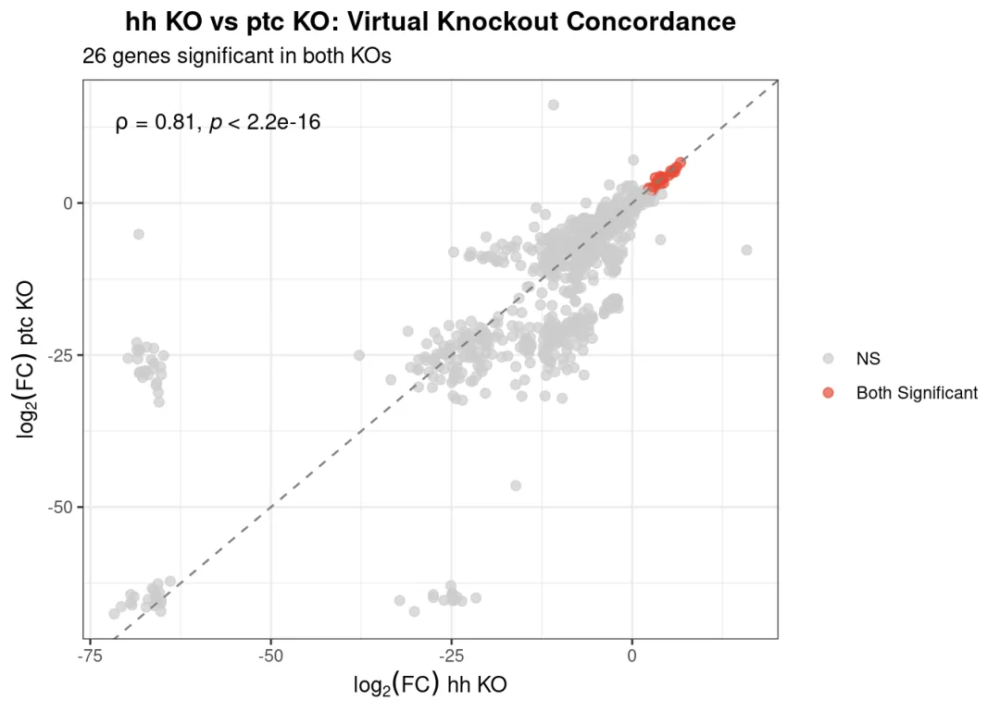
# ========== 扰动距离分布对比 ==========
ko_comparison <-rbind(
data.frame(gene = diff_hh$gene, distance = diff_hh$distance,
KO ="hh (Hedgehog)"),
data.frame(gene = diff_ptc$gene, distance = diff_ptc$distance,
KO ="ptc (Patched)"))
ggplot(ko_comparison, aes(x = KO, y =log2(distance +1e-10), fill = KO)) +
geom_violin(alpha =0.6, draw_quantiles =0.5) +
geom_boxplot(width =0.12, alpha =0.4, outlier.size =0.3) +
scale_fill_manual(values =c("hh (Hedgehog)" = "#E64B35",
"ptc (Patched)" = "#4DBBD5")) +
labs(title ="Perturbation Distribution: hh vs ptc Virtual KO",
subtitle ="Broad vs focused perturbation patterns",
x ="", y =expression(log[2](distance +10^{-10}))) +
theme_bw() +theme(plot.title =element_text(hjust =0.5, face ="bold"),
legend.position ="none")
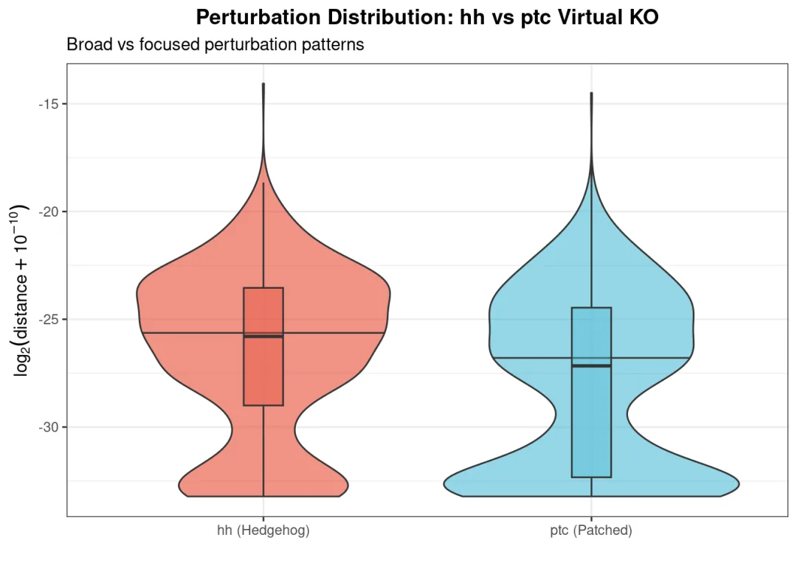
九、与已知Hh通路生物学的一致性验证
可能是基因组支持度的问题？这部分直接not found
# ========== hh和ptc DEGs中的已知Hh通路基因 ==========
# 从文献中获取的关键Hh通路成员（及其蜘蛛LOC ID）
hh_pathway_known <-c(
"LOC107451809" = "hh (Hedgehog ligand)",
"LOC107440240" = "ptc (Patched receptor)",
"LOC107452113" = "msx (Msx1/2, segmentation TF)",
"LOC107438841" = "FGFR (Hh co-receptor)",
"LOC107451231" = "ash1 (achaete-scute, Hh target)",
"LOC107443696" = "sna (snail, EMT factor)",
"LOC107450100" = "Dll (Distal-less, Hh target)",
"LOC107448645" = "SP6/9 (leg development, Hh target)",
"LOC107457564" = "otd (orthodenticle, Hh regulated)",
"LOC107456525" = "delta (Notch ligand, Hh crosstalk)"
)
cat("=== Known Hh pathway genes in DEG results ===\n")
## === Known Hh pathway genes in DEG results ===
for(loc_id innames(hh_pathway_known)) {
in_hh <-loc_id %in%hh_sig_genes
in_ptc <-loc_id %in%ptc_sig_genes
if(in_hh ||in_ptc) {
hh_fc <-if(in_hh) sprintf("%+.3f", hh_DEG$avg_log2FC[hh_DEG$gene==loc_id]) else"N/A"
ptc_fc <-if(in_ptc) sprintf("%+.3f", ptc_DEG$avg_log2FC[ptc_DEG$gene==loc_id]) else"N/A"
cat(sprintf(" %-15s | hh DEG: %5s | ptc DEG: %5s | %s\n",
loc_id, hh_fc, ptc_fc, hh_pathway_known[loc_id]))
}
}
## LOC107451809 | hh DEG: +13.194 | ptc DEG: +0.855 | hh (Hedgehog ligand)
## LOC107440240 | hh DEG: +0.663 | ptc DEG: +11.340 | ptc (Patched receptor)
## LOC107438841 | hh DEG: +0.394 | ptc DEG: N/A | FGFR (Hh co-receptor)
## LOC107443696 | hh DEG: N/A | ptc DEG: +0.662 | sna (snail, EMT factor)
## LOC107450100 | hh DEG: -1.967 | ptc DEG: N/A | Dll (Distal-less, Hh target)
## LOC107448645 | hh DEG: -2.806 | ptc DEG: -0.735 | SP6/9 (leg development, Hh target)
## LOC107457564 | hh DEG: +1.378 | ptc DEG: +0.659 | otd (orthodenticle, Hh regulated)
## LOC107456525 | hh DEG: -1.458 | ptc DEG: -0.912 | delta (Notch ligand, Hh crosstalk)
# ptc作为Hh通路的负调控因子：
# ptc pRNAi → Hh通路激活 → Hh靶基因上调
# scRNA中ptc+细胞 → Hh通路被抑制 → Hh靶基因下调
# 因此ptc DEG中，Hh靶基因应该在ptc+组中下调
cat("\nBiological consistency check:\n")
##
## Biological consistency check:
cat("ptc is a NEGATIVE regulator of Hh pathway.\n")
## ptc is a NEGATIVE regulator of Hh pathway.
cat("Expected: Hh target genes DOWN in ptc+ cells.\n")
## Expected: Hh target genes DOWN in ptc+ cells.
cat("Check: msx (Hh target) in ptc DEG -> ",
if("LOC107452113"%in%ptc_DEG$gene)
sprintf("log2FC = %+.3f", ptc_DEG$avg_log2FC[ptc_DEG$gene=="LOC107452113"])
else"Not found", "\n")
## Check: msx (Hh target) in ptc DEG -> Not found
测试文件下载链接：

 本推送测试文件下载链接：
本推送测试文件下载链接：
链接: https://pan.baidu.com/s/1DkdD3khdv_JmgOo36cx4oQ
提取码请联系客服微信获取


欢迎交流

 留一个领取资料、开箱即用的单细胞分析镜像的助手[Biomamba_zhushou]，方便各位随时交流。同时我们也构建了交流群矩阵，欢迎大家一起讨论。
留一个领取资料、开箱即用的单细胞分析镜像的助手[Biomamba_zhushou]，方便各位随时交流。同时我们也构建了交流群矩阵，欢迎大家一起讨论。
 您点的每个赞和在看，我都认真当成了喜欢
您点的每个赞和在看，我都认真当成了喜欢